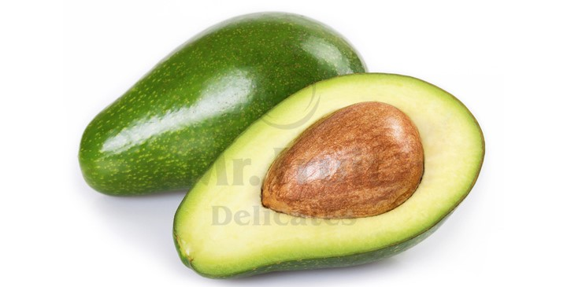
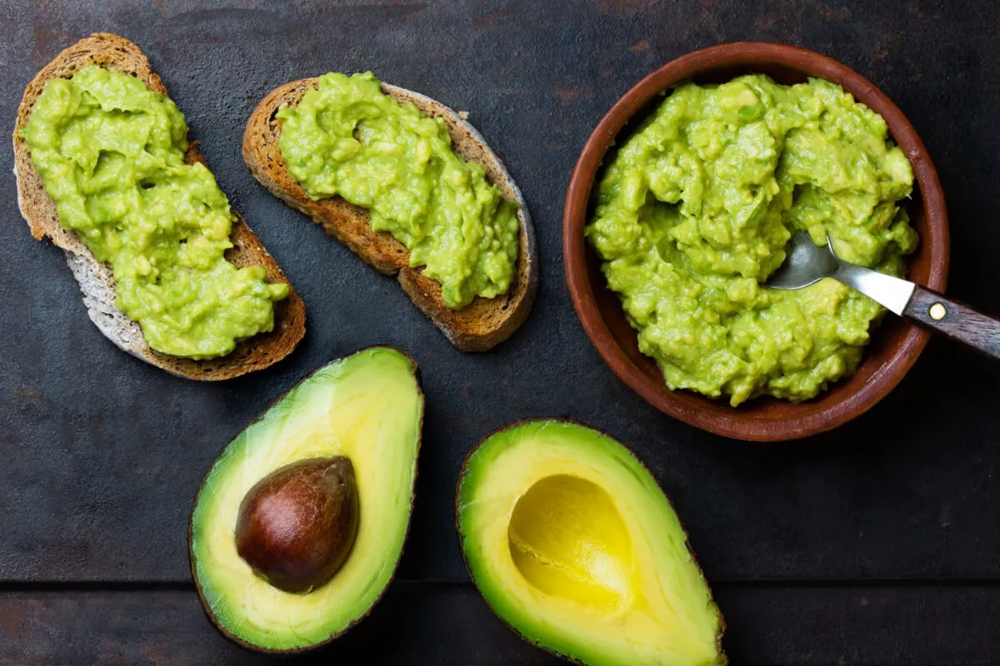

Mi az az avokádó?
Az avokádó (Persea americana) egy rendkívül népszerű és egészséges gyümölcs, amelyet az utóbbi években széles körben elterjedt étrendekben, például a szuperételek között emlegetnek. Eredetileg Közép-Amerikából származik, de ma már világszerte termesztik, különösen Mexikóban, Dél-Amerikában, Kaliforniában, Spanyolországban és Izraelben. Az avokádó nemcsak ízletes, hanem gazdag tápanyagokban is, ami miatt számos egészségügyi előnnyel jár.

Az avokádó egyedülálló abban, hogy magas zsírtartalmú gyümölcs, de ezek az egészséges zsírok, amelyek jótékony hatással vannak a szervezetre. A gyümölcsben található zsírsavak nagy része monozsírsav, főleg oleinsav, amely szívbarát és csökkenti a rossz koleszterin (LDL) szintjét, miközben növeli a jó koleszterin (HDL) szintjét. Emellett az avokádóban található koleszterin nem tartalmaz, ami további előnyt jelent a szív- és érrendszer számára.Az avokádó kiváló forrása számos vitaminnak és ásványi anyagnak. Gazdag K-vitaminban, amely fontos a vérrögösödés szabályozásában és az egészséges csontok fenntartásában. Emellett jelentős mennyiségű C-vitamint, E-vitamint, B-vitaminokat (különösen B5 és B6), valamint folsavat tartalmaz. A folsav különösen fontos terhes nők számára, mivel hozzájárul a magzat egészséges fejlődéséhez. Az ásványi anyagok közül kiemelkedik a kálium, amely az avokádóban még a banánnál is magasabb koncentrációban található. A kálium segít szabályozni a vérnyomást és csökkenti a stroke kockázatát.

Az avokádóban található antioxidánsok, mint például a lutein és a zeaxantin, fontosak a szem egészsége szempontjából. Ezek az anyagok segítenek megelőzni a szürkehályog kialakulását és a szemlencse degenerációját. Emellett az avokádóban található glutation nevű antioxidáns erősíti az immunrendszert és segít a szervezet detoxikációjában.
Az avokádó előnyei
- Az avokádó hozzájárulhat a testsúly szabályozásához is. Bár magas kalóriatartalmú, a benne lévő egészséges zsírok és rostok hosszan tartó teltségérzetet okoznak, ami csökkenti az éhségérzetet és segít kevesebb kalóriát fogyasztani. A rostok emellett elősegítik az emésztést és segítenek megelőzni a székrekedést.
- Az avokádó rendkívül sokoldalú élelmiszer, amely számos ételben felhasználható. Frissen fogyasztható salátákban, szendvicseken, vagy például guacamoleként, amely egy híres mexikói dip. Az avokádó olaja kiváló választás sütéshez vagy saláták ízesítéséhez, mivel magas füstpontja van és egészséges zsírokban gazdag. Emellett az avokádó sima és krémállaga miatt gyakran használják vegán ételekben, például a majonéz vagy a csokoládéspread helyettesítésére.
- Az avokádó nemcsak táplálkozási szempontból kiváló, hanem a bőrápolásban is nagy szerepet játszik. Az avokádóolaj és az avokádókrémek hidratálják és táplálják a bőrt, segítve a rugalmasságának megőrzését és a ráncok megelőzését. A benne található E-vitamin és antioxidánsok védik a bőrt a szabad gyökök káros hatásaitól.
Összességében az avokádó egy igazi szuperélelmiszer, amely számos egészségügyi előnnyel jár. Gazdag egészséges zsírokban, vitaminokban, ásványi anyagokban és antioxidánsokban, hozzájárul a szív egészségéhez, az emésztés javításához, a testsúly szabályozásához, és még a bőr egészségét is támogatja. Ha még nem tetted volna, érdemes beépíteni az avokádót a napi étrendedbe, hogy élvezd a számos előnyét, amelyet ez a csodálatos gyümölcs nyújt.